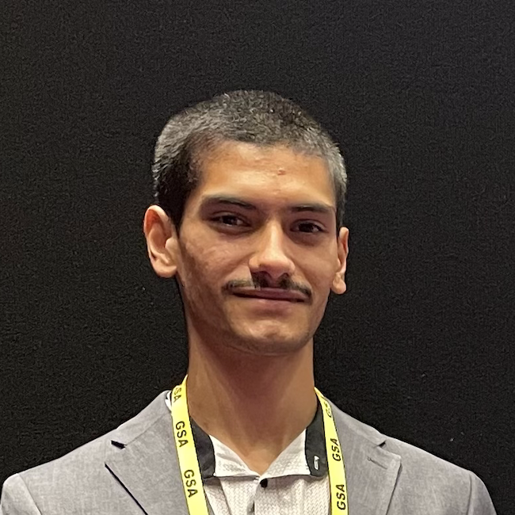

Alejandro Aparcedo
GRFP Fellow
aaparcedo.io@gmail.com
View Resume
2025 - 2027
MSc in Computer Vision at the University of Central Florida.
2020 - 2024
BSc in computer science at the University of Central Florida.
publications
On the Robustness of Large Multimodal Models Against Image Adversarial Attacks
CVPR 2024
X. Cui, A. Aparcedo, YK Jang, SN Lim
Multimodal Power Outage Prediction for Rapid Disaster Response and Resource Allocation
PVSC 2024
A. Aparcedo, C. Lopez, A. Kotta, M. Li
Generalized deep learning model for photo-voltaic module segmentation from satellite and aerial imagery
Solar Energy, Vol. 274, pp. 112539, 2024
G. Garcia, A. Aparcedo, GK Nayak, T. Ahmed, M. Shah, M. Li
Also on
Google Scholar
media appearances
1 Minute with 6 UCF Alums Who the NSF Believes Exemplify Advancing Research